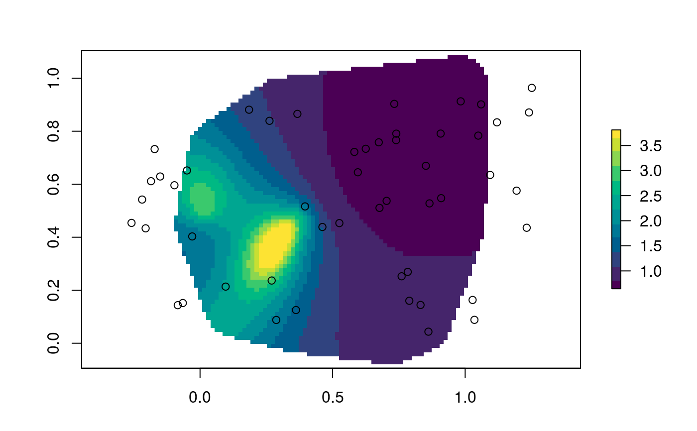

sr.RdEstimate the local spread rate of an epidemiological invasion.
sr(x, r = estimation_mask(x, buffer_size = max(st_distance(x))/10))
| x | A |
|---|---|
| r | A |
This function will compute spread-rate estimates for all of the
Monte Carlo samples in the dataset. It uses internally the function
future_map which will take advantage of
multiple processors or cluster access if you set a proper
plan beforehand. See examples.
require(sf) ## Randomly sample 50 point in the unit square x_mat <- matrix(runif(100), ncol = 2) ## Make it spatial point in a projected CRS x_sfc <- st_cast(st_sfc(st_multipoint(x_mat), crs = 3857), "POINT") ## Assign dates proportional to the squared distance to the origin ## So that spread-rate decreases linearly sro <- sr_obs(st_sf(x_sfc, date = sqrt(rowSums(x_mat**2))), "date") sro <- sr_obs(st_sf(x_sfc, date = rowSums(x_mat**2)), "date", uq = sr_uq(6, .2, .2, .3)) ## Estimate local spread-rate ## in the units of the coordinates divided by the units of time sre <- sr(sro)#> Warning: #> Grid searches over lambda (nugget and sill variances) with minima at the endpoints: #> (GCV) Generalized Cross-Validation #> minimum at right endpoint lambda = 0.0006152913 (eff. df= 7.599955 ) #> Warning: #> Grid searches over lambda (nugget and sill variances) with minima at the endpoints: #> (GCV) Generalized Cross-Validation #> minimum at right endpoint lambda = 0.0003524432 (eff. df= 9.499992 ) #> Warning: #> Grid searches over lambda (nugget and sill variances) with minima at the endpoints: #> (GCV) Generalized Cross-Validation #> minimum at right endpoint lambda = 0.0002831076 (eff. df= 11.39999 ) #> Warning: #> Grid searches over lambda (nugget and sill variances) with minima at the endpoints: #> (GCV) Generalized Cross-Validation #> minimum at right endpoint lambda = 0.0004388292 (eff. df= 8.5498 ) #> Warning: #> Grid searches over lambda (nugget and sill variances) with minima at the endpoints: #> (GCV) Generalized Cross-Validation #> minimum at right endpoint lambda = 0.0003516891 (eff. df= 9.499995 )